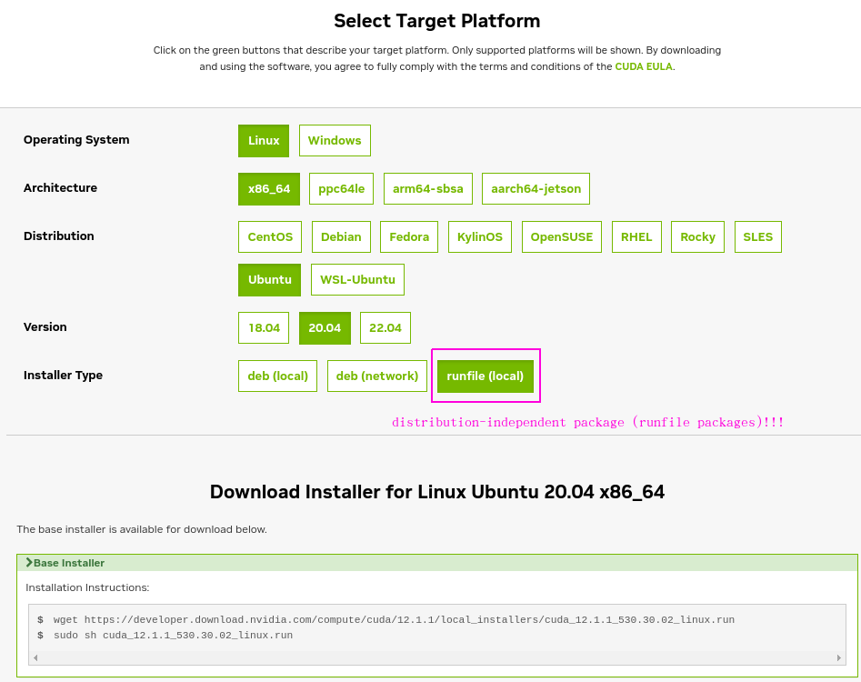

NVIDIA and CUDA Setup
Intro
This almost never works however I did just get it to work so I will document what worked.
First (extremely abbreviated):
- Deployed Azure VM Type:
Standard NC6s v3 (6 vcpus, 112 GiB memory) - Expanded the disk (not required but I ran out of room some how)
azureuser@gpu-worker:~$ sudo sh cuda_12.1.1_530.30.02_linux.run
Extraction failed.
Ensure there is enough space in /tmp and that the installation package is not corrupt
Signal caught, cleaning up
so...you need more than 8GB of disk space...
Use these docs : docs.nvidia.com
Following along (summary)
2.1. Verify You Have a CUDA-Capable GPU
$ lspci | grep -i nvidia
0001:00:00.0 3D controller: NVIDIA Corporation GV100GL [Tesla V100 PCIe 16GB] (rev a1)
Sweet we are good to go.
2.2. Verify You Have a Supported Version of Linux
x86_64
DISTRIB_ID=Ubuntu
DISTRIB_RELEASE=20.04
DISTRIB_CODENAME=focal
DISTRIB_DESCRIPTION="Ubuntu 20.04.3 LTS"
NAME="Ubuntu"
VERSION="20.04.3 LTS (Focal Fossa)"
ID=ubuntu
ID_LIKE=debian
PRETTY_NAME="Ubuntu 20.04.3 LTS"
VERSION_ID="20.04"
HOME_URL="https://www.ubuntu.com/"
SUPPORT_URL="https://help.ubuntu.com/"
BUG_REPORT_URL="https://bugs.launchpad.net/ubuntu/"
PRIVACY_POLICY_URL="https://www.ubuntu.com/legal/terms-and-policies/privacy-policy"
VERSION_CODENAME=focal
UBUNTU_CODENAME=focal
Ubuntu 20+ is fairly new as of 06_02_2023 so I'd say yes...
2.3. Verify the System Has gcc Installed
$ gcc --version
gcc (Ubuntu 9.4.0-1ubuntu1~20.04.1) 9.4.0
Copyright (C) 2019 Free Software Foundation, Inc.
This is free software; see the source for copying conditions. There is NO
warranty; not even for MERCHANTABILITY or FITNESS FOR A PARTICULAR PURPOSE.
I think I had to install but that was trivial:
$ sudo apt install gcc
2.4. Verify the System has the Correct Kernel Headers and Development Packages Installed
Under the ubuntu section I used:
sudo apt-get install linux-headers-$(uname -r)
2.5. Install MLNX_OFED
Totally skipped this section...don't know what it is...
2.6. Choose an Installation Method
Secret sauce right here!
...from docs
"The CUDA Toolkit can be installed using either of two different installation mechanisms: distribution-specific packages (RPM and Deb packages), or a distribution-independent package (runfile packages).
The distribution-independent package has the advantage of working across a wider set of Linux distributions, but does not update the distribution’s native package management system. The distribution-specific packages interface with the distribution’s native package management system. It is recommended to use the distribution-specific packages, where possible."
I'm sure the distribution-specific is better but it wasn't working and I don't have time for that...so independent it is! A little confusing but the link you want is in the next section...so on we go.
2.7. Download the NVIDIA CUDA Toolkit
The NVIDIA CUDA Toolkit is available at https://developer.nvidia.com/cuda-downloads.

Code of course:
wget https://developer.download.nvidia.com/compute/cuda/12.1.1/local_installers/cuda_12.1.1_530.30.02_linux.run
sudo sh cuda_12.1.1_530.30.02_linux.run
YaY! it worked right?
Of course not. Why would such a good UI with filters let you down...2023 baby...life ain't perfect yet.........so here we go wtf...
First Error: Disk space
azureuser@gpu-worker:~$ sudo sh cuda_12.1.1_530.30.02_linux.run
Extraction failed.
Ensure there is enough space in /tmp and that the installation package is not corrupt
Signal caught, cleaning up
Add more space...
Second Error: Nouveau???
We have to disable the Nauveau kernel driver. Enter the stack. This discussion led to this link NVIDIA developer zone. The thing is this is the same guide we've been using! However WHAT YOU NEED is much further down.
azureuser@gpu-worker:~$ cat /var/log/cuda-installer.log
[INFO]: Driver not installed.
[INFO]: Checking compiler version...
[INFO]: gcc location: /usr/bin/gcc
[INFO]: gcc version: gcc version 9.4.0 (Ubuntu 9.4.0-1ubuntu1~20.04.1)
[INFO]: Initializing menu
[INFO]: nvidia-fs.setKOVersion(2.15.3)
[INFO]: Setup complete
[INFO]: Installing: Driver
[INFO]: Installing: 530.30.02
[INFO]: Executing NVIDIA-Linux-x86_64-530.30.02.run --ui=none --no-questions --accept-license --disable-nouveau --no-cc-version-check --install-libglvnd 2>&1
[INFO]: Finished with code: 256
[ERROR]: Install of driver component failed. Consult the driver log at /var/log/nvidia-installer.log for more details.
[ERROR]: Install of 530.30.02 failed, quitting
.... we need to look in /var/log/nvidia-installer.log ....
azureuser@gpu-worker:~$ cat /var/log/nvidia-installer.log
nvidia-installer log file '/var/log/nvidia-installer.log'
creation time: Fri Jun 2 20:09:52 2023
installer version: 530.30.02
PATH: /tmp/makeself.qlAaARJl:/usr/local/sbin:/usr/local/bin:/usr/sbin:/usr/bin:/sbin:/bin:/snap/bin
nvidia-installer command line:
./nvidia-installer
--ui=none
--no-questions
--accept-license
--disable-nouveau
--no-cc-version-check
--install-libglvnd
Using built-in stream user interface
-> Detected 6 CPUs online; setting concurrency level to 6.
-> Installing NVIDIA driver version 530.30.02.
ERROR: The Nouveau kernel driver is currently in use by your system. This driver is incompatible with the NVIDIA driver, and must be disabled before proceeding. Please consult the NVIDIA driver README and your Linux distribution's documentation for details on how to correctly disable the Nouveau kernel driver.
WARNING: One or more modprobe configuration files to disable Nouveau are already present at: /usr/lib/modprobe.d/nvidia-installer-disable-nouveau.conf, /etc/modprobe.d/nvidia-installer-disable-nouveau.conf. Please be sure you have rebooted your system since these files were written. If you have rebooted, then Nouveau may be enabled for other reasons, such as being included in the system initial ramdisk or in your X configuration file. Please consult the NVIDIA driver README and your Linux distribution's documentation for details on how to correctly disable the Nouveau kernel driver.
-> For some distributions, Nouveau can be disabled by adding a file in the modprobe configuration directory. Would you like nvidia-installer to attempt to create this modprobe file for you? (Answer: Yes)
-> One or more modprobe configuration files to disable Nouveau have been written. For some distributions, this may be sufficient to disable Nouveau; other distributions may require modification of the initial ramdisk. Please reboot your system and attempt NVIDIA driver installation again. Note if you later wish to re-enable Nouveau, you will need to delete these files: /usr/lib/modprobe.d/nvidia-installer-disable-nouveau.conf, /etc/modprobe.d/nvidia-installer-disable-nouveau.conf
ERROR: Installation has failed. Please see the file '/var/log/nvidia-installer.log' for details. You may find suggestions on fixing installation problems in the README available on the Linux driver download page at www.nvidia.com.
Notice lots of text about Nouveau...Let's fix that.
Section: 8.3.6. Ubuntu
Create a file at /etc/modprobe.d/blacklist-nouveau.conf with the following contents:
blacklist nouveau
options nouveau modeset=0
Regenerate the kernel initramfs:
sudo update-initramfs -u
I restarted the VM after that. Not sure if that was necessary but the stack over flow discussion recommended it.
azureuser@gpu-worker:~$ sudo sh cuda_12.1.1_530.30.02_linux.run
Installation failed. See log at /var/log/cuda-installer.log for details.
Mother....!
Third Error: install make
azureuser@gpu-worker:~$ cat /var/log/cuda-installer.log
...
[ERROR]: Install of driver component failed. Consult the driver log at /var/log/nvidia-installer.log for more details.
[ERROR]: Install of 530.30.02 failed, quitting
azureuser@gpu-worker:~$ cat /var/log/nvidia-installer.log
...
ERROR: Unable to find the development tool `make` in your path; please make sure that you have the package 'make' installed. If make is installed on your system, then please check that `make` is in your PATH.
ERROR: Installation has failed. Please see the file '/var/log/nvidia-installer.log' for details. You may find suggestions on fixing installation problems in the README available on the Linux driver download page at www.nvidia.com.
Ok this one is easy:
azureuser@gpu-worker:~$ sudo apt install make
Success!
azureuser@gpu-worker:~$ sudo sh cuda_12.1.1_530.30.02_linux.run
===========
= Summary =
===========
Driver: Installed
Toolkit: Installed in /usr/local/cuda-12.1/
Please make sure that
- PATH includes /usr/local/cuda-12.1/bin
- LD_LIBRARY_PATH includes /usr/local/cuda-12.1/lib64, or, add /usr/local/cuda-12.1/lib64 to /etc/ld.so.conf and run ldconfig as root
To uninstall the CUDA Toolkit, run cuda-uninstaller in /usr/local/cuda-12.1/bin
To uninstall the NVIDIA Driver, run nvidia-uninstall
Logfile is /var/log/cuda-installer.log
As they suggest add paths to PATH and LD_LIBRARY_PATH. Add this to ~/.bashrc
# cuda
export PATH=/usr/local/cuda-12.1/bin:$PATH
export LD_LIBRARY_PATH=/usr/local/cuda-12.1/lib64:$LD_LIBRARY_PATH
azureuser@gpu-worker:~$ nvidia-smi
Fri Jun 2 20:24:58 2023
+---------------------------------------------------------------------------------------+
| NVIDIA-SMI 530.30.02 Driver Version: 530.30.02 CUDA Version: 12.1 |
|-----------------------------------------+----------------------+----------------------+
| GPU Name Persistence-M| Bus-Id Disp.A | Volatile Uncorr. ECC |
| Fan Temp Perf Pwr:Usage/Cap| Memory-Usage | GPU-Util Compute M. |
| | | MIG M. |
|=========================================+======================+======================|
| 0 Tesla V100-PCIE-16GB Off| 00000001:00:00.0 Off | Off |
| N/A 22C P0 34W / 250W| 0MiB / 16384MiB | 0% Default |
| | | N/A |
+-----------------------------------------+----------------------+----------------------+
+---------------------------------------------------------------------------------------+
| Processes: |
| GPU GI CI PID Type Process name GPU Memory |
| ID ID Usage |
|=======================================================================================|
| No running processes found |
+---------------------------------------------------------------------------------------+